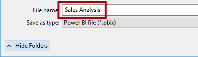
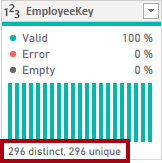
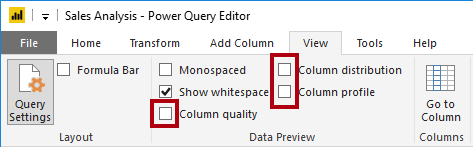

Power BI Desktop에서 데이터 준비#
이 랩의 예상 완료 시간은 45분입니다.
이 랩에서는 Adventure Works 회사를 위한 Power BI Desktop 솔루션 개발을 시작합니다. 여기에는 원본 데이터에 연결하여 데이터를 미리 보고 데이터 미리 보기 기법을 사용하여 원본 데이터의 특징과 품질을 이해하는 과정이 포함됩니다.
이 랩에서는 다음 작업을 수행하는 방법을 알아봅니다.
Power BI Desktop 열기
Power BI Desktop 옵션 설정
원본 데이터에 연결
원본 데이터 미리 보기
데이터 미리 보기 기법을 사용하여 데이터를 더 잘 파악
랩 사례#
이 랩은 데이터 준비부터 보고서 및 대시보드로 게시에 이르기까지 전체 사례로 고안된 랩 시리즈 중 하나입니다. 어떤 순서로든 랩을 완료할 수 있습니다. 그러나 여러 랩을 진행하려는 경우 다음 순서를 따르는 것이 좋습니다.
Power BI Desktop에서 데이터 준비
Power BI Desktop에서 데이터 로드
Power BI에서 데이터 모델 디자인
Power BI Desktop에서 DAX 계산 만들기 1부
Power BI Desktop에서 DAX 계산 만들기, 2부
Power BI Desktop에서 보고서 디자인, 1부
Power BI Desktop에서 보고서 디자인, 2부
AI 시각적 개체를 사용하여 데이터 분석
Power BI 대시보드 만들기
행 수준 보안 적용
연습 1: 데이터 준비#
이 연습에서는 8개의 Power BI Desktop 쿼리를 만듭니다. 6개의 쿼리는 SQL Server의 데이터를 원본으로 하며, 2개의 쿼리는 CSV 파일을 원본으로 합니다.
작업 1: Power BI Desktop 파일 저장#
이 작업에서는 먼저 Power BI Desktop 파일을 저장합니다.
Power BI Desktop을 열려면 작업 표시줄에서 Microsoft Power BI Desktop 바로 가기를 클릭합니다.

시작 창을 닫으려면 창 오른쪽 위의 X를 클릭합니다.

파일을 저장하려면 파일 리본 탭을 클릭하여 Backstage 뷰를 엽니다.
저장을 선택합니다.

다른 이름으로 저장 창에서 D:\PL300\MySolution 폴더로 이동합니다.
파일 이름 상자에 판매 분석을 입력합니다.

저장을 클릭합니다.

팁: 왼쪽 위에 있는 저장 아이콘을 클릭하여 파일을 저장할 수도 있습니다.

작업 2: Power BI Desktop 옵션 설정#
이 작업에서는 Power BI Desktop 옵션을 설정합니다.
Power BI Desktop에서 파일 리본 탭을 클릭하여 Backstage 보기를 엽니다.
왼쪽에서 옵션 및 설정을 선택한 다음, 옵션을 선택합니다.

옵션 창의 왼쪽에 있는 현재 파일 그룹에서 데이터 로드를 선택합니다.
현재 파일에 대한 데이터 로드 설정은 모델링할 때 기본 동작을 결정하는 설정 옵션을 허용합니다.
관계 그룹에서는 이미 선택되어 있는 두 옵션의 선택을 취소합니다.

이 두 가지 옵션을 활성화하는 것은 데이터 모델을 개발할 때 유용할 수 있지만, 앞서 랩 환경을 지원하기 위해 비활성화되었습니다. Power BI Desktop에서 데이터 로드 랩에서 관계를 만들 때 각 옵션을 추가하는 이유를 알아볼 것입니다.
확인을 클릭합니다.

Power BI Desktop 파일을 저장합니다.
작업 3: SQL Server에서 데이터 가져오기#
이 작업에서는 SQL Server 테이블을 기반으로 쿼리를 만듭니다.
데이터 그룹 안에 있는 홈 리본 탭에서 SQL Server를 클릭합니다.
SQL Server 데이터베이스 창의 서버 상자에 localhost를 입력합니다.
이 랩에서는 localhost를 사용하여 SQL Server 데이터베이스에 연결합니다. 솔루션을 직접 만들 때는 이 방식을 사용하지 않는 것이 좋습니다. 그 이유는 게이트웨이 데이터 원본이 localhost를 확인할 수 없기 때문입니다.
확인을 클릭합니다.

자격 증명을 묻는 메시지가 표시되면 SQL Server 데이터베이스 창에서 현재 자격 증명 사용을 선택합니다. 그런 다음, 연결합니다.
탐색기 창의 왼쪽에서 AdventureWorksDW2020 데이터베이스를 확장합니다.
AdventureWorksDW2020 데이터베이스는 AdventureWorksDW2017 샘플 데이터베이스를 기반으로 합니다. 그 내용은 과정 랩의 학습 목표를 지원하도록 수정되었습니다.
DimEmployee 테이블을 선택하지만 체크하지 마십시오.

오른쪽 창에 테이블 데이터의 미리 보기가 있습니다.
미리 보기 데이터에서는 열과 행의 샘플을 각각 확인할 수 있습니다.
쿼리를 만들려면 다음 6개의 테이블 옆에 있는 체크박스를 선택합니다.
DimEmployee
DimEmployeeSalesTerritory
DimProduct
DimReseller
DimSalesTerritory
FactResellerSales
선택한 테이블의 데이터에 변환을 적용하려면 데이터 변환을 클릭합니다.
이 랩에서는 데이터를 변환하지 않을 것입니다. 이 랩에서는 Power Query 편집기 창에서 데이터를 살펴보고 프로파일링하는 과정을 중점적으로 살펴봅니다.

작업 4: SQL Server 쿼리 미리 보기#
이 작업에서는 SQL Server 쿼리의 데이터를 미리 봅니다. 먼저 데이터에 대한 관련 정보를 알아볼 것입니다. 또한 열 품질, 열 분포 및 열 프로필 도구를 사용하여 데이터를 이해하고 데이터 품질을 평가합니다.
왼쪽의 Power Query 편집기 창에 쿼리 창이 표시됩니다.
쿼리 창에는 선택한 각 테이블에 대한 쿼리가 하나 있습니다.
첫 번째 쿼리인 DimEmployee를 선택합니다.

SQL Server 데이터베이스의 DimEmployee 테이블에는 각 직원에 대해 하나의 행이 저장됩니다. 이 테이블의 행 하위 집합은 판매 직원을 나타내며, 이는 사용자가 개발할 모델과 관련됩니다.
왼쪽 아래의 상태 표시줄에는 테이블 통계에 33개의 열과 296개의 행이 있습니다.

데이터 미리 보기 창에서 가로로 스크롤하여 모든 열을 검토합니다.
마지막 5개의 열에는 테이블 또는 값 링크가 포함되어 있습니다.
이러한 5개의 열은 데이터베이스에 있는 다른 테이블과의 관계를 나타냅니다. 이 열들은 테이블을 서로 결합하는 데 사용할 수 있습니다. Power BI Desktop에서 데이터 로드 랩에서 테이블을 조인할 것입니다.
열 품질을 평가하려면 보기 리본 탭 안에 있는 데이터 미리 보기 그룹에서 열 품질을 체크합니다.

열 품질 기능을 사용하면 열에서 발견된 유효한 값, 오류 또는 빈 값의 비율을 쉽게 확인할 수 있습니다.
Position 열(여섯 번째 마지막 열)의 경우, 행의 94%가 비어 있습니다(null).

열 분포를 평가하려면 보기 리본 탭의 데이터 미리 보기 그룹 내에서 열 분포를 선택합니다.
Position 열을 다시 검토하고 4개의 상이 값과 하나의 고유 값이 있는지 확인합니다.
EmployeeKey(첫 번째) 열에 대한 열 분포를 검토 합니다. 여기에는 296개의 상이 값과 296개의 고유 값이 있습니다.

Distinct 개수와 고유 개수가 동일할 때 이는 해당 열에 고유 값들이 포함되어 있음을 의미합니다. 모델링 시에는 일부 모델 테이블에 고유한 열을 포함해야 합니다. 이러한 고유 열을 사용하여 일대다 관계를 만들 수 있습니다. Power BI Desktop에서 데이터 모델링 랩에서 이러한 관계를 만듭니다.
쿼리 창에서 DimEmployeeSalesTerritory 쿼리를 선택합니다.
DimEmployeeSalesTerritory 테이블에는 각 직원에 대한 하나의 행과 직원들이 관리하는 영업 지역이 저장됩니다. 테이블은 한 명의 직원을 대상으로 많은 지역과 관련된 지원을 합니다. 일부 직원들은 1개, 2개 또는 그 이상의 많은 지역을 관리합니다. 이 데이터를 모델링하는 경우, 다대다 관계를 정의해야 합니다.
쿼리 창에서 DimProduct 쿼리를 선택합니다.
DimProduct 테이블에는 회사에서 판매하는 제품당 하나의 행이 포함되어 있습니다.
마지막 열을 표시하려면 가로로 스크롤합니다.
DimProductSubcategory 열을 확인하세요.
Power BI Desktop에서 데이터 로드 랩에서 이 쿼리에 변환을 추가할 때 DimProductSubcategory 열을 사용하여 테이블을 조인합니다.
쿼리 창에서 DimReseller 쿼리를 선택합니다.
DimReseller 테이블에는 재판매인당 하나의 행이 포함되어 있습니다. 재판매인은 Adventure Works에 제품을 판매 및 배포하거나 부가가치 서비스를 제공합니다.
열 값을 보려면 보기 리본 탭의 데이터 미리 보기 그룹 내에서 열 프로필을 선택합니다.

BusinessType 열 머리글을 선택합니다.
데이터 미리 보기 창 아래에 새 창이 표시됩니다.
데이터 미리 보기 창에서 열 통계 및 값 분포를 검토합니다.
데이터 품질 문제 확인: 웨어하우스에는 2개의 레이블 (Warehouse및 철자가 잘못된 Ware House)이 있습니다.
Ware House 표시줄 위에 커서를 놓은 다음, 이 값을 가진 5개의 행이 있는지 확인합니다.
Power BI Desktop에서 데이터 로드 랩에서 변환을 적용하여 이 5개 행의 레이블을 재지정합니다.
쿼리 창에서 DimEmployeeSalesTerritory 쿼리를 선택합니다.
DimSalesTerritory 테이블에는 본사를 포함해 판매 지역당 하나의 행이 포함되어 있습니다. 하나의 국가에 여러 지역이 할당되며, 여러 국가가 그룹에 할당됩니다. Power BI Desktop에서 데이터 모델링 랩에서 지역, 국가 또는 그룹 수준에서 분석을 지원하는 계층 구조를 만듭니다.
쿼리 창에서 FactResellerSales 쿼리를 선택합니다.
FactResellerSales 테이블에는 판매 주문 라인당 하나의 행이 포함되어 있으며, 하나의 판매 주문에는 하나 이상의 품목이 포함되어 있습니다.
TotalProductCost 열의 열 품질을 검토하고 행의 8%가 비어 있는지 확인합니다.
TotalProductCost 열 값이 없는 것은 데이터 품질 문제에 속합니다. 이 문제를 해결하기 위해 Power BI Desktop에서 데이터 로드 랩에서 DimProduct 테이블에 저장된 제품 표준 비용을 사용하여 누락된 값을 채우기 위해 변환을 적용합니다.
작업 5: CSV 파일에서 데이터 가져오기#
이 작업에서는 CSV 파일을 기반으로 쿼리를 생성합니다.
새 쿼리를 추가하려면 파워 쿼리 편집기 창에서 홈 리본 탭 내에 있는 새 쿼리 그룹 에서 새 원본 아래쪽 화살표를 클릭한 다음, 텍스트/CSV를 선택합니다.

열기 창에서 D:\PL300\Resources 폴더로 이동하고 ResellerSalesTargets.csv 파일을 선택합니다.
열기를 클릭합니다.
ResellerSalesTargets.csv 창에서 미리 보기 데이터를 검토합니다.
확인을 클릭합니다.

쿼리 창에 ResellerSalesTargets 쿼리가 추가된 것을 확인합니다.
ResellerSalesTargets CSV 파일에는 매년 영업 직원당 하나의 행이 포함됩니다. 각 행은 12개의 월별 목표 판매량(천 단위로 표시)을 기록합니다. Adventure Works 회사의 회계 연도가 7월 1일에 시작됩니다.
빈 값이 포함된 열이 없습니다.
월별 목표 판매량이 없을 때에는 그 대신 하이픈 문자가 저장됩니다.
열 이름 왼쪽에 있는 각 열 머리글의 아이콘을 검토합니다.

아이콘은 열 데이터 형식을 나타냅니다. 123은 정수이며 ABC는 텍스트입니다.
Power BI Desktop에서 데이터 로드 랩에서 다양한 변환을 적용하여 Date, EmployeeKey, TargetAmount의 세 열로만 구성된 다른 모양의 결과를 얻습니다.
작업 6: CSV 파일에서 추가 데이터 가져오기#
이 작업에서는 다른 CSV 파일을 기반으로 추가 쿼리를 만듭니다.
이전 작업의 단계를 사용하여 D:\PL300\Resources\ColorFormats.csv 파일을 기반으로 한 쿼리를 만듭니다.
ColorFormats CSV 파일에는 제품 색상당 한 개의 행이 포함됩니다. 각 행은 배경 및 글꼴 색상의 서식을 지정하는 16진수 코드를 기록합니다. Power BI Desktop에서 데이터 로드 랩에서 이 데이터를 DimProduct 쿼리 데이터와 통합합니다.
작업 7: 완료#
이 작업에서는 랩을 완료합니다.
보기 리본 탭의 데이터 미리 보기 그룹 내부에서 이 랩의 앞부분에서 사용하도록 설정한 다음 세 가지 데이터 미리 보기 옵션을 선택 취소합니다.
열 품질
열 분포
열 프로필

Power BI Desktop 파일을 저장하려면 Power Query 편집기 창의 파일 Backstage 뷰에서 저장을 선택합니다.
쿼리를 적용하라는 메시지가 표시되면 나중에 적용을 클릭합니다.

쿼리를 적용하면 쿼리의 데이터가 데이터 모델에 로드됩니다. 먼저 적용해야 하는 변형이 많아서 이 작업을 수행할 준비가 되지 않았습니다.
다음 랩을 시작하려는 경우 Power BI Desktop을 열어 둡니다.
Power BI Desktop에서 데이터 로드 랩에서 쿼리에 다양한 변환을 적용한 다음 해당 쿼리를 적용하여 데이터 모델에 로드할 것입니다.